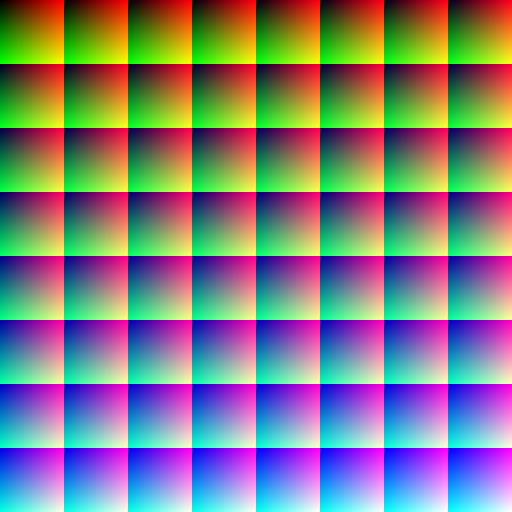

texture
texelFetch
texelFetch: 0, 512
texture coordinates start at the bottom left (0, 0) to the top right (1, 1)
texelFetch is limited to 0 -> size-1 while texture samples between pixels at the corner of each
